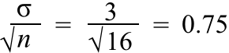

Interpreting the standard error
The 70-95-100 rule-of-thumb provides a useful interpretation of the standard error of an estimator. For all variables with fairly symmetrical bell-shaped distributions,
There is approx 95% probability of being within 2 st devns of the mean and it is almost certain that a value will be within 3 st devns of the mean.
Applying this to an estimator's error distribution and making the assumption that the bias is zero (or at least small),
There is approx 95% probability that the error is within 2SE of zero and it is almost certainly within 3SE of zero.
Note that the term standard error is often abbreviated to SE.
Soluble sugar in plants
In the example on the previous page, it was known that one type of analysis of soluble sugar in plants gave glucose levels (mg/g dry weight) with the following distribution.
X ~ normal (μ , σ = 3)
A particular plant was tested 16 times, giving a sample mean of 137 mg glucose per gram dry weight.
On the previous page, we showed the full error distribution for this estimate. We can get similar information from only the standard error of the estimate. Since the sample size was n = 16, the standard error of the estimate is
| standard error = SE = |  |
Our estimate (i.e. 137 mg/g dry wt) has about 95% chance of being within 2SE = 1.5 of the true glucose level for this plant and is almost certain to be within 3SE = 2.25 of it.